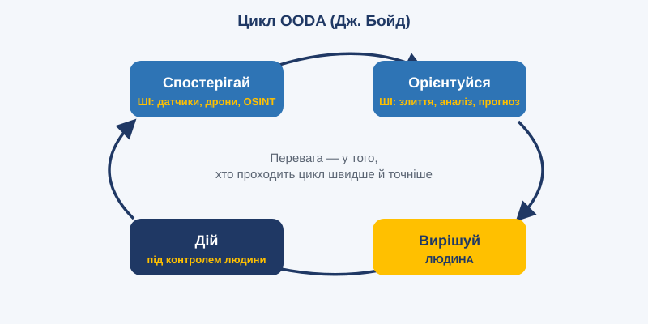

Тема 9. Когнітивні обчислення та підтримка рішень

План заняття: цілі, навчальні питання, розподіл часу
Вид заняття: групова вправа.
Час: 2 години (90 хв).
Місце: навчальний клас.
Навчальні цілі:
- Сформувати розуміння ролі систем підтримки рішень і ситуаційної обізнаності.
- Ознайомити з графами знань і цифровими двійниками.
- Відпрацювати ухвалення рішень з урахуванням рекомендацій ШІ та їх обмежень.
Навчальні питання:
- Від даних до рішень: DIKW, графи знань, гібридні системи.
- Ситуаційна обізнаність і цикл OODA.
- Пастки систем підтримки рішень. Групова вправа.
Матеріальне забезпечення: проектор, карти місцевості (навчальні), бланки вводних, фліпчарт.
Розподіл часу:
| Етап | Зміст | Час |
|---|---|---|
| Вступна частина | Тема, цілі | 5 хв |
| Навчальне питання 1 | DIKW, графи знань, цифрові двійники | 20 хв |
| Навчальне питання 2 | Ситуаційна обізнаність, OODA | 15 хв |
| Навчальне питання 3 | Групова вправа «Рекомендація системи» | 40 хв |
| Заключна частина | Розбір, висновки | 10 хв |
Методичні вказівки викладачу: вправу проведіть у два раунди. У першому раунді «система» дає рекомендацію без пояснення, у другому — з поясненням і рівнем впевненості. Порівняйте, як змінилася якість рішень груп. Один з раундів має містити навмисно хибну рекомендацію.
Навчальний матеріал
9.1. Від даних до рішень
Даних сьогодні більше, ніж людина здатна осмислити. Системи підтримки прийняття рішень (DSS, Decision Support Systems) допомагають перетворити дані на інформацію, інформацію на знання, а знання на дії.
Класична піраміда DIKW: Дані → Інформація → Знання → Мудрість.
- Дані: «температура двигуна 92°»;
- Інформація: «двигун перегрівається»;
- Знання: «перегрів у таких умовах означає несправність системи охолодження»;
- Мудрість: «варто повернути апарат зараз, щоб не втратити його».
9.2. Графи знань
Граф знань — це мережа сутностей (люди, місця, об'єкти, події) та зв'язків між ними.
Приклад:
- [Підрозділ А] — розташований у → [Населений пункт Б]
- [Підрозділ А] — використовує → [Тип техніки В]
- [Тип техніки В] — вразливий до → [Засобу Г]
Графи знань дозволяють:
- поєднувати дані з різних джерел;
- знаходити неочевидні зв'язки;
- пояснювати висновки (шлях у графі видно);
- давати мовним моделям надійне джерело фактів (GraphRAG).
9.3. Експертні системи нового покоління
Класичні експертні системи 1980-х містили тисячі правил «якщо — то» і були крихкими. Сучасні гібридні системи поєднують:
- правила й регламенти (доктрини, стандарти, протоколи);
- машинне навчання (прогнози на основі даних);
- мовні моделі (розуміння неструктурованих запитів і пояснення висновків).
9.4. Ситуаційна обізнаність
Ситуаційна обізнаність (за моделлю Мікі Ендслі) має три рівні:
- Сприйняття: що відбувається?
- Розуміння: що це означає?
- Прогнозування: що станеться далі?
Когнітивні технології підтримують усі три рівні:
- автоматичний збір даних із датчиків, дронів, звітів;
- злиття та візуалізація на єдиній карті (Common Operational Picture);
- виявлення аномалій і закономірностей;
- прогнозування розвитку подій;
- генерація варіантів дій з оцінкою ризиків.
9.5. Цикл OODA та прискорення рішень

Модель Джона Бойда, OODA (Observe — Orient — Decide — Act, тобто спостерігай — орієнтуйся — вирішуй — дій), описує цикл ухвалення рішень. Перевагу має той, хто проходить цикл швидше й точніше. ШІ скорочує етапи спостереження й орієнтації з годин до хвилин. Проте швидкість не повинна витісняти якість рішень і відповідальність людини.
9.6. Цифрові двійники
Цифровий двійник — це віртуальна модель реального об'єкта чи процесу, яка оновлюється даними в реальному часі. Двійники застосовують для:
- прогнозування відмов обладнання (предиктивне обслуговування);
- моделювання сценаріїв («що буде, якщо...»);
- навчання персоналу без ризику;
- оптимізації логістики та ресурсів.
9.7. Пастки систем підтримки рішень
- упередження автоматизації: людина бездумно приймає рекомендацію;
- втрата навичок: без системи фахівець уже не здатен ухвалити рішення;
- ілюзія точності: гарна візуалізація маскує невизначеність даних;
- чорна скринька: неможливо зрозуміти, чому система радить саме це.
Хороша система підтримки рішень:
- показує рівень впевненості;
- пояснює свої висновки;
- пропонує альтернативи, а не єдину «правильну» відповідь;
- лишає остаточне рішення людині.
Висновки
- Когнітивні системи перетворюють потік даних на знання та варіанти дій.
- Графи знань і цифрові двійники є потужними інструментами структурування реальності.
- Мета ШІ — посилити людське рішення, а не замінити людську відповідальність.
Запитання для роздумів
- Яке рішення у вашій діяльності найбільше виграло б від кращої ситуаційної обізнаності?
- Як навчити людей не довіряти системі сліпо, але й не ігнорувати її?
Практичне завдання
Групова вправа «Рекомендація системи» (у групах по 4–5 осіб, 40 хв).
Група отримує вводну: опис ситуації, умовну карту та рекомендацію «системи підтримки рішень» (наприклад, змінити маршрут колони постачання).
- Пройдіть цикл OODA: які дані є, що вони означають, які варіанти дій, яке рішення.
- Визначте, яких даних не вистачає і які запитання ви поставили б системі.
- Ухваліть рішення та обґрунтуйте, чому ви прийняли або відхилили рекомендацію.
- Після другого раунду порівняйте: як наявність пояснення вплинула на ваше рішення?
Критерії оцінювання (2 бали): логічність проходження циклу OODA (1 бал), критична оцінка рекомендації (1 бал).
Тест для самоконтролю
Обери відповідь у кожному запитанні й натисни «Перевірити відповіді».